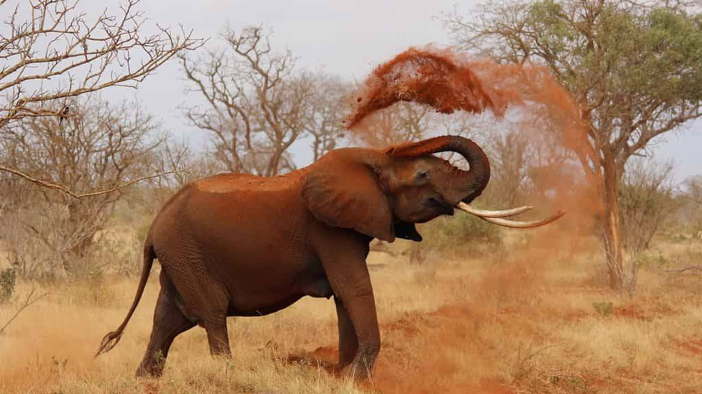

Photographie
Je capture des moments et paysages qui m'inspirent. La photographie m'apprend à voir le monde différemment et à apprécier les détails souvent négligés.
Je me spécialise particulièrement dans la photographie de paysages urbains et naturels, jouant avec la lumière et les compositions pour créer des images évocatrices.
Ce que j'aime particulièrement :
- Photographie de paysages lors de mes voyages
- Expérimentation avec la photographie en basse lumière
- Post-traitement pour améliorer l'impact visuel
